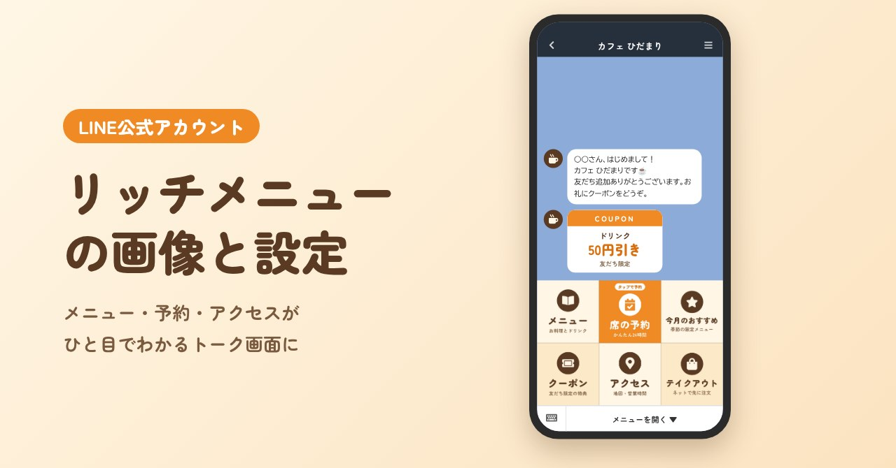
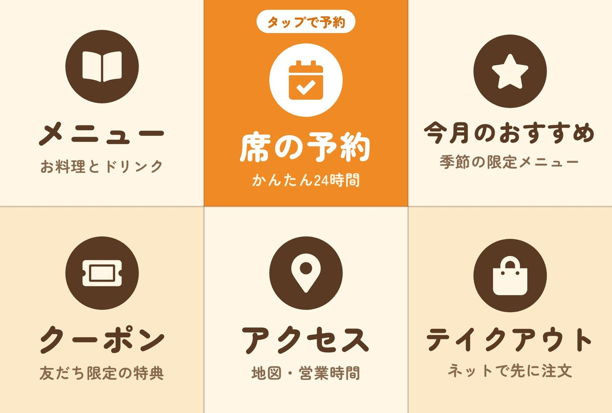
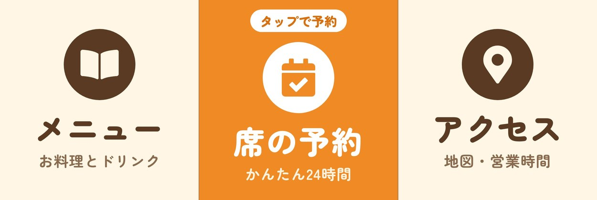
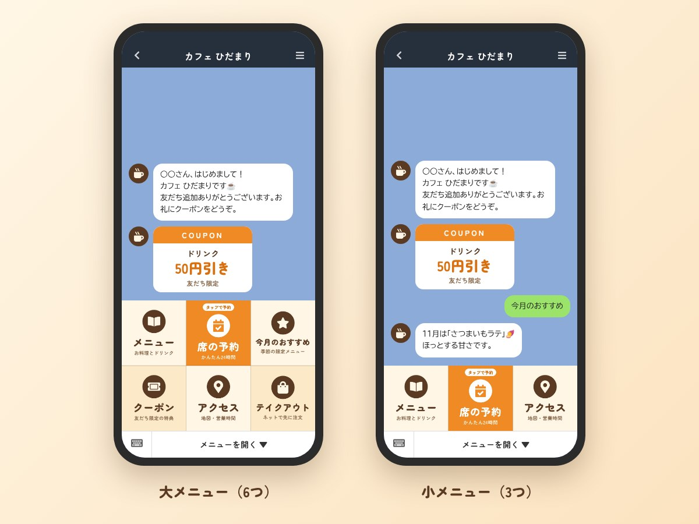
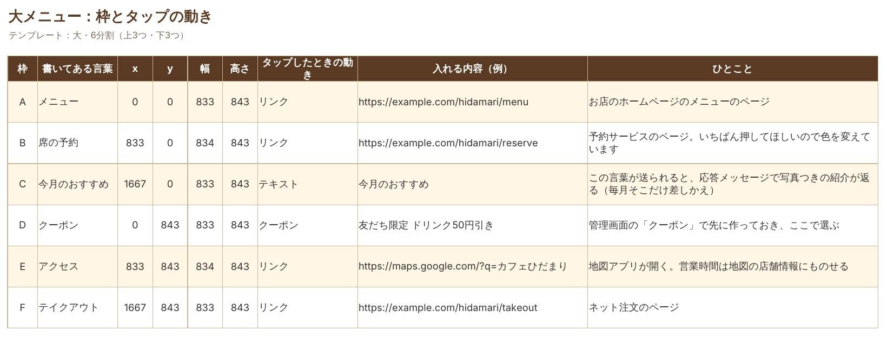
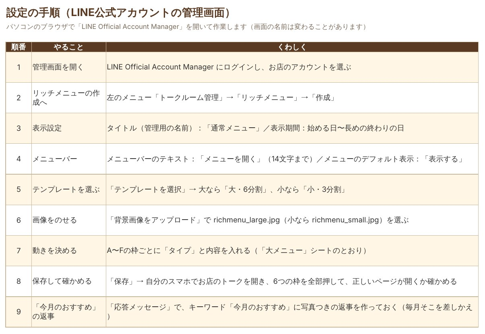
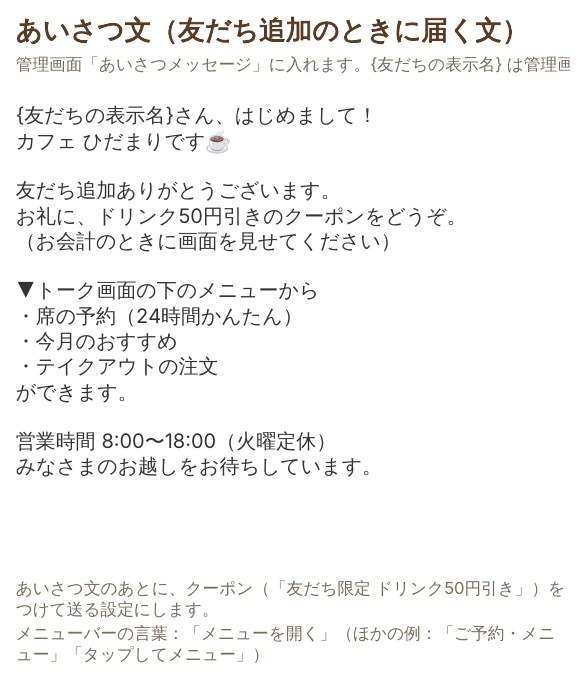

← 制作実績一覧へ戻る
見本ファイルつき
LINEリッチメニュー（画像と設定・あいさつ文）
お店のLINE公式アカウントで、トーク画面の下に出るメニュー（リッチメニュー）の画像を作りました。メニュー・予約・アクセスがひと目でわかり、いちばん使ってほしい「予約」が目立つようにしています。LINEの決まった大きさで作り、タップしたときの動き、設定の手順、友だち追加のあいさつ文までそろえました。

想定した依頼
「お店のLINE公式アカウントを始めたが、トーク画面の下のメニューが無地のまま。メニュー・予約・アクセスなどがひと目でわかる画像と、友だち追加のときに届くあいさつ文を作ってほしい」。飲食店・サロン・教室からのご相談を想定して作りました。
作ったもの
架空のお店「カフェ ひだまり」のリッチメニューです。お店の色（クリーム・こげ茶・オレンジ）で、アイコンと短い言葉だけにしました。
- 大メニュー（6つ）：メニュー／席の予約／今月のおすすめ／クーポン／アクセス／テイクアウト
- 小メニュー（3つ）：トーク画面を広く見せたいとき用。よく使うメニュー・予約・アクセスだけ
- 設定シート：どこを押すと何が開くかと、管理画面での設定の手順
- あいさつ文：友だち追加のときに届く文（クーポンつき）と、メニューバーの言葉



設定のしかた
LINEのリッチメニューは、決まった区切り（テンプレート）ごとに「押したときの動き」を決めます。絵の区切りをテンプレートの区切りとぴったり合わせたので、押した場所と開くページがずれません。



工夫した点
- 小さな画面でも迷わない：スマホではメニューの横幅が数センチになります。1つのボタンにアイコンと大きな言葉を1つだけにして、細かい説明は小さな文字に分けました。
- 押してほしいボタンを目立たせる：お店にとっていちばん大事な「席の予約」だけオレンジにして、「タップで予約」の印をつけました。
- LINEの決まりどおり：画像の大きさ（2500×1686px・2500×843px）と容量（1MB以下）、絵の区切りがタップの範囲と合っているかを、プログラムで確かめました。
- 毎月の手間を減らす：「今月のおすすめ」は画像ではなく自動の返事にしたので、毎月の差しかえは返事の写真と文だけで済み、メニュー画像は作り直さなくてよくなります。
規模と制作時間
- 画像2枚（大・小）、設定シート6枚（使い方・大メニュー・小メニュー・設定の手順・あいさつ文・確認）、あいさつ文
- 制作：画像・設定シート・あいさつ文の作成と確認まで 約1時間（AIと一緒に作成）
こんなご依頼にも対応できます
- LINE公式アカウントのリッチメニューやあいさつ文を、お店の雰囲気に合わせて作りたい
- 予約やクーポンなど、押してほしいボタンが伝わるメニューにしたい
- 季節やキャンペーンに合わせて、メニュー画像を差しかえたい
注意
お店の名前・URL・クーポンはすべて架空の見本です。管理画面のボタンの名前は、LINEの画面の変更で変わることがあります。